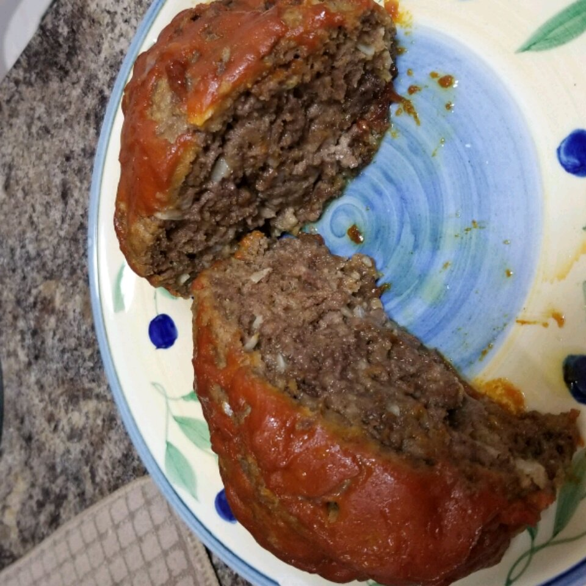

Easy Meatloaf

Easy Meatloaf Ingredients
- 1 1/2 pounds ground beef
- 1 egg
- 1 onion chopped
- 1 cup of milk
- 1 cupd dreid bread crumps
- salt and pepper to taste
- 2 tablespoons brob sugar
- 2 tablespoons prepared mustard
- 1/3 cup ketchup
Directions
- Preheat oveon to 350 degrees F
- Ijn a large bowl, cobime the beef, egg, milk and bread OR cracker crumbs. Season with salt and pepper to taste and palce in a slightly greased 9x5 inch loaf pan, or form into a loaf and plac3e in slightly greased 9x13 inch baking dish
- In a sperate small bowl, cobine the bron sugar, mustard and ketchup. Mix well and pir over the loaf.
- Bake at 305 degrees F.